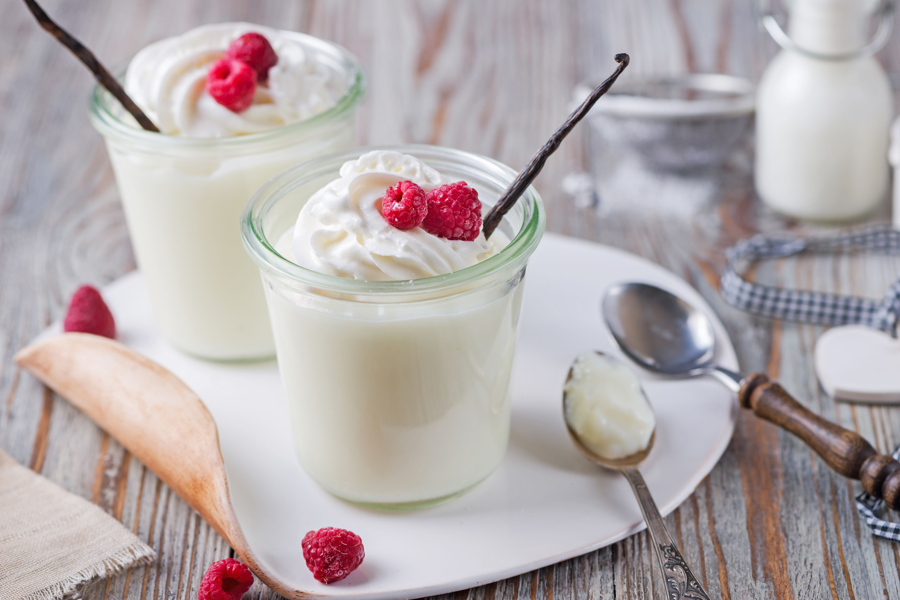

Homemade Vanilla Pudding

Description
Vanilla stovetop pudding made with milk and a hint of butter.
Ingredients
- 2 cups milk
- ½ cup white sugar
- 3 tablespoons cornstarch
- ¼ teaspoon salt
- 1 teaspoon vanilla extract
- 1 tablespoon butter
Steps
- In medium saucepan over medium heat, heat milk until bubbles form at edges. In a bowl, combine sugar, cornstarch and salt. Pour into hot milk, a little at a time, stirring to dissolve. Continue to cook and stir until mixture thickens enough to coat the back of a metal spoon. Do not boil. Remove from heat, stir in vanilla and butter. Pour into serving dishes. Chill before serving.